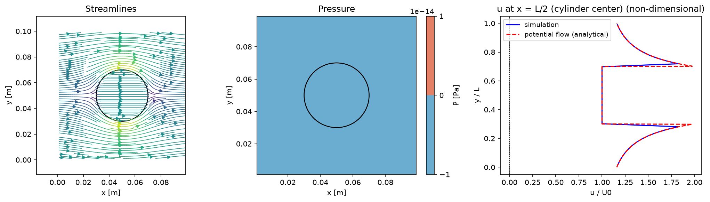

1. 導入
このステップではwrk/initial.f90の初期条件だけを埋める。
数値スキーム自体（移流・拡散・圧力）はまだ出てこないので、Fortranの書き方に慣れることが主な目的。
数値スキームのファイル（advection.f90・diffusion.f90・poisson.f90）は
次のステップ以降で埋めていく（境界条件bc.f90は完成形が入っている）。
支配方程式
このコードの目標は、非圧縮のNavier-Stokes方程式を数値的に解くこと。速度を として、ベクトルで書くと運動量の式と連続の式は:
このあとのステップで、各項（移流・粘性・圧力）を成分ごとに離散化して1つずつ実装していく。この導入ステップでは、まず初期条件だけを作る。
格子: MAC（スタガード）格子
圧力pはセル中心（整数添字 i, j）、速度u,vはセルの面（半整数添字 i+1/2 など）
に配置する[4]。等間隔格子なので、座標配列は持たずdx,dyだけで十分。
スカラー点（圧力 p）は整数添字 i,j。ベクトル点（速度 u,v）は半整数添字 i±1/2 で、隣接するスカラー点の ちょうど中間（セルの面）に位置する。
コード上の配列添字はこの「+1/2側」をそのまま使う: u(i,j)が数式の
そのものを表す（v(i,j)も同様に）。
Fortranの最低限の書き方
以降で使うものだけ、ここでまとめて説明する。
module initial ! ファイル1つ＝モジュール1つ、が基本
use config ! 他モジュールの中身（変数・サブルーチン）を使う宣言
implicit none ! 変数の暗黙の型宣言を禁止（必ず明示的に宣言する）
real(8) :: u(0:Nx, 0:Ny+1) ! 倍精度実数の2次元配列。宣言時にサイズ確定（allocatableは使わない）
end module initial ! containsは書かない: moduleはグローバル変数の置き場だけ
subroutine initial_condition()
use config
use initial
implicit none
integer :: i, j ! ループ変数などの整数
do j = 0, Ny+1 ! 0からNy+1までのループ（他言語のfor文に相当）
do i = 0, Nx
u(i,j) = 0.0d0 ! 0.0d0 の d0 は倍精度実数リテラルという意味
end do
end do
end subroutine initial_condition
演習: 初期条件（wrk/initial.f90）
最初の演習。initial_conditionでu,vの初期値を入れる。題材は円柱まわりの
ポテンシャル流
（一様流＋二重湧き出し（ダブレット））の解析解:
ここで 、(xc,yc)は領域中心、r0は円柱の半径。
足場はひな形に用意してある: 幾何（xc, ycと半径 r0 = 0.2·min(Lx,Ly)）と、
各格子点の座標x, y・r2の計算まで書いてある。座標配列を持たないので、
x = i*dxのようにi,jから毎回計算する（uとvは格子上の
位置が違うので、2つのループでx,yの作り方が違う点に注意）。
埋めるのはu,vの式そのものだけ。円柱の内側（）では
式が中心で発散するので、単純に一様流（u=U0, v=0）にしておく（if文で分岐）。
uのループはお手本としてひな形に書いてあるので、これを見ながらvのループを自分で書く:
! u: ひな形に用意済み（お手本）
do j = 0, Ny+1
do i = 0, Nx
x = i*dx
y = (j-0.5d0)*dy
r2 = (x-xc)**2 + (y-yc)**2
if (r2 < r0**2) then
u(i,j) = U0
else
u(i,j) = U0*(1.0d0 - r0**2*((x-xc)**2-(y-yc)**2)/r2**2)
end if
end do
end do
vのループも形は同じ。else枝にvの解析解（上のKaTeXの式）を入れる。
uと違いvはの位置なので、座標の作り方が
x = (i-0.5d0)*dx, y = j*dyになる（これもひな形に用意済み）。
v の答えを見る
do j = 0, Ny
do i = 0, Nx+1
x = (i-0.5d0)*dx
y = j*dy
r2 = (x-xc)**2 + (y-yc)**2
if (r2 < r0**2) then
v(i,j) = 0.0d0
else
v(i,j) = -2.0d0*U0*r0**2*(x-xc)*(y-yc)/r2**2
end if
end do
end do
物性・実行パラメータ（config.csv）
wrk/config.csvで流体物性・時間刻みなどを設定する（src/にも同じ内容の
独立したファイルがある）。水を想定した切りのよい値（ρ=1000 kg/m³, ν=1.0×10⁻⁶ m²/s）をデフォルトにしている。
格子解像度Nx,Nyだけは配列サイズを決めるためconfig.f90内の
コンパイル時定数（変更したら再コンパイルが必要）。
| key | 意味 |
|---|---|
| Lx, Ly | 領域サイズ [m] |
| rho | 密度 [kg/m³]（水を想定: 1000） |
| nu | 動粘性係数 ν [m²/s]（水を想定: 1.0×10⁻⁶） |
| U0 | 流入速度 [m/s] |
| dt | 時間刻み幅 [s] |
| nstep | 総タイムステップ数 |
| nout | 何ステップごとに結果を出力するか |
| omega | SORの緩和係数（1〜2の間、4. 圧力Poissonで使う） |
| tol | 圧力反復の収束判定（相対値） |
| max_iter | 圧力反復の最大回数 |
| case | 後処理（post/plot.py）専用の欄。test/channel/cavityのいずれか。
Fortran本体はこの欄を読まない（どの基準解を重ねて表示するかを後処理側が決めるだけ） |
Re（レイノルズ数）は入力ではなく Re = U0 × min(Lx,Ly) / nu として実行時に計算・表示される。
ビルド・実行のしくみ
コンパイルと実行はこの2つ（＋移動）だけ。コマンドは1行ずつ実行する:
cd wrk make ./cfd.exe
makeが（変更のあったファイルだけ）コンパイルして実行ファイルcfd.exeを作り、
./cfd.exeがそれを実行する。お手本の完成形を動かしたいときはcd srcで同じ2つ。
src/とwrk/はそれぞれ独立したmakefileとconfig.csvを持つので、
切り替えの操作は不要（そのディレクトリの中でmakeするだけ）。出力データだけは
どちらから実行しても共通のリポジトリ直下data/にまとまる。
なお./cfd.exeは実行のたびに、data/内の前回の出力（field_*.dat）を自動で消してから書き直すので、古い結果が混ざらない。
後処理・可視化（Python）
計算結果（data/field_XXXXXX.dat）を絵にするのが後処理スクリプト post/plot.py。
リポジトリ直下から実行する（data/はsrc/・wrk/共通なので、どちらの結果もここで見られる）:
python post/plot.py wrk/config.csv
引数は拡張子で見分ける（.csv＝設定ファイル、それ以外＝データファイル）ので順番は問わない。
どちらも省略でき、データはdata/内の最新、設定は直近に編集したconfig.csv（wrk/かsrc/）が
自動で選ばれる——計算した直後ならpython post/plot.pyだけでもよい。上ではどの設定を使うか分かるようwrk/config.csvを明示している。
plot.pyはそのcase欄を見て、重ねる基準解を切り替える:
test— 円柱まわりのポテンシャル流の解析解（この導入ステップはこれ）channel— plane Poiseuille flow の解析解（放物線）cavity— Ghia らの基準解
出力は流線・圧力・断面の速度分布の3枚のパネルで、読み込んだデータと同じ場所に.pngとして保存される。
時間発展を動画で見たいときは python post/animate.py（data/animation.gifができる）。可視化にはPython（numpy・matplotlib）が要る。
実行して確認
wrk/main.f90は今回は触らない。時間発展の呼び出し （boundary_condition・advection・diffusion・poisson）は すべてコメントアウトされたままにしておく —initial_conditionが作った初期状態がそのまま書き出される。wrk/config.csvを次のようにする（他はデフォルトのまま）:key 値 理由 casetest後処理で円柱まわりポテンシャル流の解析解を重ねる nstep1時間発展をまだ呼ばないので1ステップで十分 nout1その1ステップを出力する - ビルドして実行する:
cd wrk make ./cfd.exe
初回のmakeでは、まだ空欄のdiffusion.f90についてUnused dummy argument 'un'のような警告（warning）が数行出るが、 まだ実装していない項があるためで問題ない（粘性項・圧力を埋めれば消える）。Errorが出ずにcfd.exeができていれば成功。 - 結果を絵にする（リポジトリ直下に戻ってから）:
cd .. python post/plot.py wrk/config.csv
- 結果を確認する。右パネルで数値解（青線）が解析解（赤破線）に重なっていれば、
u,vは正しく書けている。 移流・粘性・圧力を実装するまでは、この初期条件が時間発展せずそのまま出てくる — それが正しい。
この段階での実行結果を見る

円柱まわりのポテンシャル流（一様流＋ダブレット）。移流・粘性・圧力を実装するまではこのまま変化しない。
initial.f90 をステージ → メッセージを書いて Commit → Push）。
ステップごとに残しておくと、あとで前の状態に戻せる。